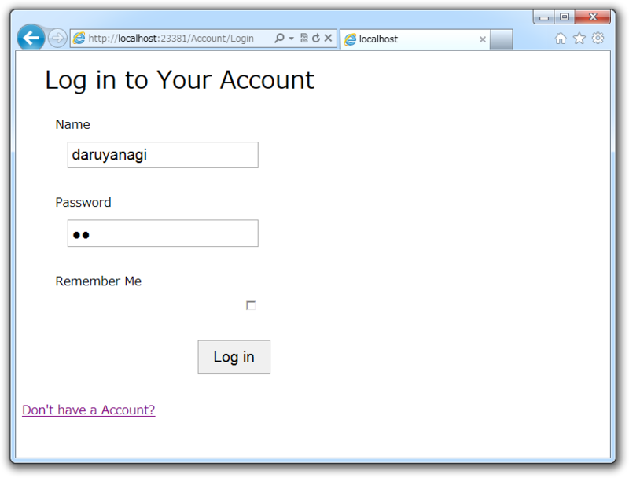

WebMatrix でユーザー認証機能（4） ―― ログインとログオフ
公開日：
WebMatrix でユーザー認証機能（3） ―― なにはともあれユーザー登録しないと始まらん - だるろぐ で無事ユーザー登録ができ、ログインされた。という訳で今回はログアウトを実装しなければならない。
# Logout.cshtml@{ WebSecurity.Logout();
var returnUrl = Request.QueryString["ReturnUrl"]; Response.Redirect(returnUrl.IsEmpty() ? "~/" : returnUrl); }
おわり！ ほんとにこれだけだよ……。一応、 Logout?ReturnUrl=~/Account/Login なんかで ~/Account/Login へリダイレクトされるようにしてみたけど。
ちなみに、ログイン処理は少し長くなった。
# Login.cshtml
@{
var name = "";
var password = "";
var rememberMe = true;
Validation.RequireField(
"name", "You must specify an name address.");
Validation.RequireField(
"password", "You must specify a password.");
if (IsPost)
{
name = Request.Form["name"];
password = Request.Form["password"];
rememberMe = Request.Form["rememberMe"].AsBool();
if (Validation.IsValid())
{
if (WebSecurity.Login(name, password, rememberMe))
{
var returnUrl = Request.QueryString["ReturnUrl"];
Response.Redirect(
returnUrl.IsEmpty() ? "~/" : returnUrl);
}
else
{
ModelState.AddFormError(
"The user name or password is incorrect.");
}
}
}
}
<section id="login">
<form method="post">
@Html.ValidationSummary("Log in was unsuccessful." +
"Please correct the errors and try again.",
excludeFieldErrors: true, htmlAttributes: null)
<fieldset>
<legend>Log in to Your Account</legend>
@this.RenderTextWithValidation("name")
@this.RenderPasswordWithValidation("password")
@this.RenderCheckBoxWithValidation("rememberMe")
<input type="submit" value="Log in" />
</fieldset>
</form>
<p>
<a href="~/Account/Register">Don't have a Account?</a>
</p>
</section>

寄り道: string クラスの拡張 - だるろぐ で作ったコードのお陰で、 RenderTextWithValidation() などがシンプルになっている以外はほとんどユーザー登録の処理と変わらない感じ。
次は OAuth でログインできるようになればいいな。
ちなみに
string.AsBool や string.IsEmpty は ASP.NET Web Pages に含まれているのかな？ このあたりの関数については、 ASP.NET | The ASP.NET Site でコンパクトに纏められているので、一度目を通しておくとわしみたいに車輪の再発明をせずに済むぞ！